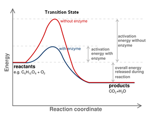
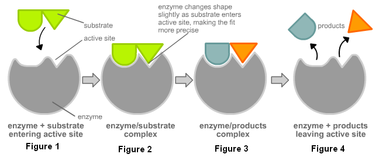
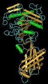
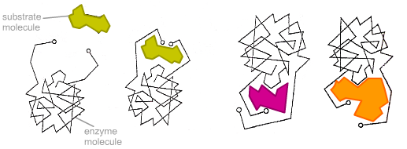
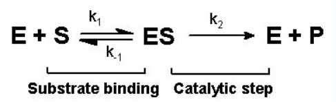

Unit 1: Biochemistry
Activity 4: Food and Enzymes
Content
In addition to playing a role in cell structures, proteins have an important biological role as biological catalysts.
Enzymes
Enzymes are protein molecules that act as biological catalysts. A catalyst is a substance that speeds up a chemical reaction without being used up itself in the process. A catalyst can be used over and over again to speed up the same reaction. Catalysts work by providing a surface to break the bonds between the reactant molecules and rearrange atoms in order to create bonds to form the products. With no catalyst, reactant molecules must collide with enough energy and the correct orientation in order to break the bonds. The energy required to break these bonds is called the activation energy. The activation energy is the amount of energy needed to reach a state where reactant bonds are breaking and product bonds are forming. This state is called the transition state. Not all the reactant molecules have enough energy to reach the transition state or the correct orientation upon collision. As a result, molecules can keep colliding with little force and there will be no change into products. One way to improve the rate of a chemical reaction is to increase the temperature. This will give each molecule more energy and increase the number of collisions as well as the force of collision and increase the likelihood of reactant bonds breaking and reaching the transition state. This can be done in a laboratory, but not in living systems where organisms are made of proteins that will denature upon heating.
 Reaction Pathway |
The red line in the diagram shows the energy level of the reactants and the energy level of the products of an uncatalyzed reaction. The highest point on the curve is the transition state. This is where the reactant bonds are breaking and product bonds are forming. At this point the molecules are neither reactants nor products, but are referred to as the activated complex. The blue line shows the same reaction, but this time with an enzyme. The enzyme does not change the energy of the products or the reactants, but works by lowering the activation energy (EA). Note that the energy required to reach the transition state is decreased and now more molecules may have the energy required to form the activated complex and be converted into products. |
In this particular reaction (above) the products have a lower energy than the reactants. When the products have a lower energy level, this is called an exergonic reaction. In an exergonic reaction the products have less free energy than that of the reactants and energy is given off from the system. When the reverse is true and the products have a higher energy than the reactants, then it is an endergonic reaction and the system requires energy. Endergonic reactions will not be spontaneous, but will require energy to be invested in the products.
Lock- Key Theory
|  Lock-Key Theory of Enzyme Specificity |
When referring to enzymes, reactant molecules are called substrates. In the above diagram, the enzyme is in gray and provides a surface for the reactant to fit into and form products. In Fig.1, the active site/cleft of the enzyme is visible. This is where the substrate fits into the enzyme perfectly. The specificity (of fit) is referred to the Lock-Key Model of enzymes where every substrate (key) fits perfectly into an enzyme (lock). Therefore, there are many enzymes to catalyze all the different reactions and they are specific to each substrate. Note in Fig.2 and Fig.3, the activated complex is formed where a substrate is converted into products. The enzyme remains unchanged and can pick up another substrate molecule.
How can proteins do this?
| Proteins have a globular structure which is not rigid. Look at the enzyme to the right. This is an enzyme called lipase. This diagram shows the 2-D structure of the alpha helix (which look like green pencils here) and the beta pleated sheets (which look like sticks here). The globular structure is flexible and can often change shape. It may have an allosteric site which is a site separate from the active site. When a substance binds to the allosteric site, the enzyme increases or decreases the productivity of the enzyme. This is shown in the diagram below. The substrate binds to the activate site, but the pink and orange molecules bind to the allosteric site. This is one way to control an enzyme, activate it or shut it down, by having another molecule bind to the allosteric site to regulate its activity. |  Lipase used to breakdown lipids |

Allosteric Regulation – the substrate fits into the active site but other molecules can
fit into another site called the allosteric site, changing the shape of the enzyme
so the substrate can no longer fit the active site.
The mechanics of the overall reaction can be depicted easily as shown in this equation.
 Mechanism of the Enzyme
This is a disclaimer. External Resources will open in a new window. Not responsible for external content.
Unless otherwise indicated, all images in this Activity are from the public domain or are © clipart.com or Microsoft clipart and are used with permission.